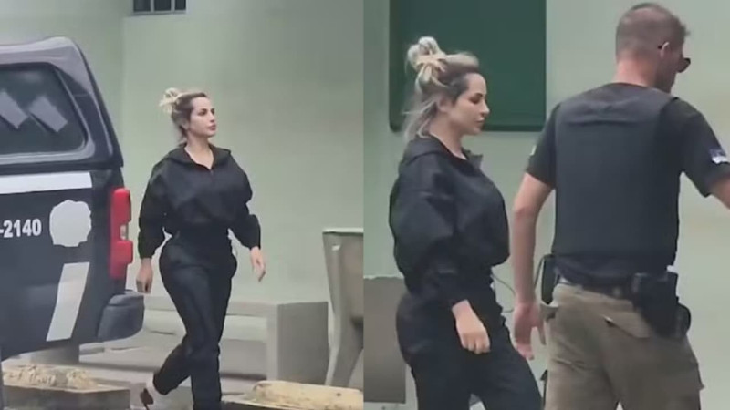

Queda da Deolane: Fim dos Influencers Criminosos?
A empresária e influenciadora digital Deolane Bezerra teve a prisão mantida pelo (TJPE), depois de passar por uma audiência de custódia nesta quinta-feira (5). Ela foi detida na véspera, em uma operação policial contra uma quadrilha suspeita de lavagem de dinheiro e jogos ilegais.
De acordo com o TJPE, a audiência aconteceu na Central de Audiências de Custódia do Recife, no Fórum Desembargador Rodolfo Aureliano. Deolane participou por videoconferência, já que está na Colônia Penal Feminina do Recife, no bairro da Iputinga, na Zona Oeste da cidade. A mãe da influenciadora, Solange Bezerra, também teve a prisão analisada na mesma sessão e permanecerá detida na Colônia Penal Feminina do Recife. Foi determinada ainda a manutenção da prisão de Maria Bernadette Pedrosa Campos. De acordo com documentos aos quais a TV Globo teve acesso, ela é mãe de Eduardo Pedrosa Campos, sócio de uma corretora de seguros e investigado pela operação. A defesa de Deolane fez um pedido de habeas corpus, alegando ilegalidade da prisão preventiva, mas o desembargador Cláudio Jean Nogueira Virgínio, da 12ª Vara Criminal da Capital, do TJPE, determinou a redistribuição do pedido para o desembargador Eduardo Maranhão, da 4ª Câmara, para que ele faça a análise. Na tarde desta quarta-feira (4), Deolane e sua mãe, Solange Alves Bezerra passaram por exame de corpo de delito no Instituto de Medicina Legal (IML), no Centro do Recife, e foram encaminhadas à Colônia Penal Feminina. Segundo a Secretaria de Ressocialização de Pernambuco (Seap), por conta da repercussão do caso, foram tomadas algumas medidas de segurança dentro da penitenciária, para garantir a integridade física da empresária. Deolane e Solange passaram a noite em uma cela reservada. Na manhã desta quinta, foi reforçado o esquema de segurança em frente ao local, com policiais da Grupo de Operações de Segurança da Polícia Penal de Pernambuco. As irmãs de Deolane, Daniele e Dayanne Bezerra, estiveram na Colônia Penal Feminina e foram recebidas pessoas com com cartazes. Na noite anterior, Daniele e Dayanne tentaram ver a mãe e a irmã, mas foram impedidas de entrar porque estavam fora do horário de visita.
Lavagem de dinheiro e envolvimento com crime organizado